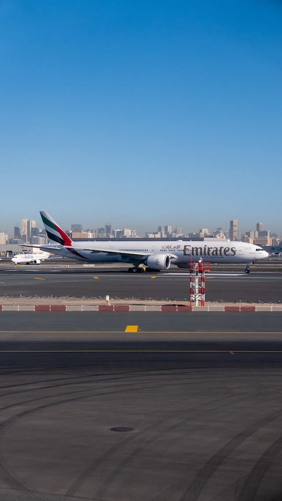
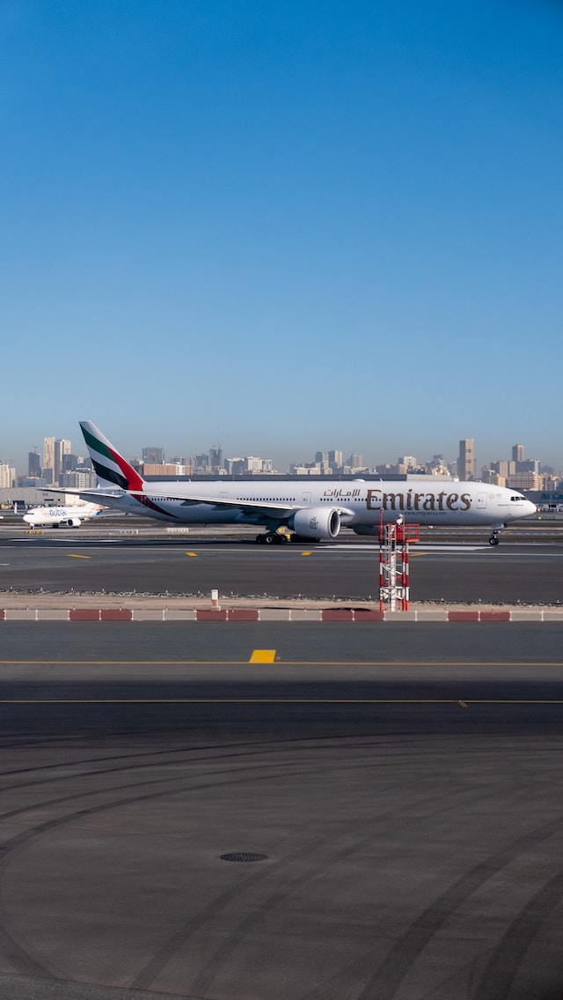

יצרניות המטוסים הגדולות בעולם


מטוסים נעים ממקום למקום במהירות רבה, ללא צורך בדרכים ותוך תלות מועטה במזג האוויר, ולכן משמשים אמצעי תחבורה נפוץ מאוד. תכונות אלה הופכות את המטוסים לשימושיים גם למטרות צבאיות ומדעיות.
את המטוס הראשון שטס בהצלחה בכוח מנועו בנו האחים רייט. מקובל כי טיסתם שנערכה ב־17 בדצמבר 1903, ונמשכה כ־12 שניות ולמרחק 39 מטרים, הייתה הטיסה הממונעת הראשונה בכלי טיס כבד מן האוויר.
מטוסים משמשים להעברת מטען ממקום למקום, במיוחד כאשר מדובר בחציית תוואי שטח בעייתי או במרחק גדול. נוסף לכך מטוסים משמשים לצילום מן האוויר, לחיזוי מזג האוויר, לכיבוי אש (בעיקר בשרפות יער), לחקלאות (בעיקר ריסוס כנגד מזיקים), ואף כתחביב ספורט.
במסגרת הצבאית המטוסים משמשים להפצצה, לתקיפה, ליירוט מטוסי אויב, לתובלת מטענים וכוחות, לאיסוף מודיעין ואף ללוחמה אלקטרונית.
קונצרן התעופה האמריקאי
חברת בואינג היא חברה אמריקנית רב לאומית, אשר עוסקת בתעופה ובמערכות חלל. היא נוסדה בידי
ויליאם בואינג בשנת 1916, התרחבה במהלך השנים ובשנת 1997 התמזגה עם מקדונל דאגלס. שתי החטיבות העיקריות שלה הן החטיבה הצבאית
(מוצרי צבא וחלל) והחטיבה למטוסי נוסעים. בואינג היא היצואנית הגדולה ביותר של ארצות הברית, ומניותיה נסחרות בבורסה לניירות
ערך בניו יורק ונכללות במדד דאו ג'ונס.
החברה הוקמה בסיאטל שבמדינת וושינגטון, ובשנת 2001 העבירה את משרדיה לשיקגו, אילינוי.
סדרת מטוסי הנוסעים הסילוניים בעלת השם בתבנית 7-7 היא אולי סימן ההיכר של בואינג בקרב הציבור הרחב. בתחילה קראה בואינג למטוסים שלה לפי המספר הסידורי של הדגם "מודל 40", "מודל 247", "מודל 377" וכן הלאה. כאשר הרחיבה החברה את עסקיה מתעופה צבאית לתעופה אזרחית וטילים הוחלט להקצות לכל תחום "קידומת": מטוסים יקבלו את מספרי ה-300 וה-400, מנועים את מספרי ה-500, רקטות וטילים את מספרי ה-600, ומטוסי סילון להסעת נוסעים ותובלה את מספרי ה-700. ב-1956 פיתחה בואינג את הבואינג 367-80 כמטוס תדלוק סילוני לחיל אוויר KC-135, ובעקבות ההצלחה שלו החליטה להסב אותו למטוס נוסעים סילוני, שייקרא "מודל 700". במחלקת השיווק חשבו שהשם לא מספיק קליט ושינו לבואינג 707. בעקבות ההצלחה העצומה של ה-707, הוחלט שכל מטוסי הנוסעים הסילוניים של בואינג יקבלו שם של מספר פלינדרומי מהצורה "7-7". למעט מספר מטוסים חריגים, כלל זה נשמר גם במאה ה-21.
03כיום שולטים ביד רמה שני קונצרנים ענקיים בייצור מטוסי נוסעים וצבאיים יחדיו - איירבוס האירופית ובואינג האמריקאית עליהם נרחיב ממש מיד. מה שהופך את הקונצרנים הללו לקונצרנים ולא רק לחברות ייצור הוא מכלול הייצור מקצה לקצה של כל רכיב ורכיב וחלוקה מסודרת למספר רב של חברות תחת הנהלת גג אחת.
 

קונצרן התעופה האירופי
איירבוס (בצרפתית: Airbus) היא יצרנית מטוסים אירופית. החברה נוסדה בשנת 1970 על ידי ממשלות צרפת ומערב גרמניה, במטרה להתחרות ביצרנית המטוסים האמריקנית בואינג. למיזם הצטרפו ספרד בשנת 1971, ובריטניה בשנת 1978. החברה רשומה בצרפת, ומפעלה הראשי נמצא בטולוז סמוך למפעלי סיטרואן פיגו ורנו.
02
קו המוצרים של איירבוס התחיל עם ה- A300 שהוא מטוס רחב גוף. בהתבסס על הצלחתה עם ה-A300, איירבוס פעלה לפיתוח מטוס צר גוף,
יחד עם מטוסים רחבי גוף נוספים המבוססים על ה-A300. בכך החחלה איירבוס לפתח את המטוסים הצרי-גוף שהובילו להשקת ה- A320
ב-1987, שהיה וממשיך להיות הצלחה מסחרית גדולה. ה-A320 היה המטוס המסחרי הראשון שהשתמש במערכת בקרה דיגיטלית של טוס על חוט.
לכל מטוסי האיירבוס שפותחו מאז יש מערכות תא הטייס הדומות ל-A320, מה שמקל על אימון הצוות. ההצלחה הובילה את איירבוס להציג
גרסה מוארכת, ה-A321 ב-1993, יחד עם ה-A319 הקצר ב-1995 וה-A318 הקצר עוד יותר ב-2002. ב-2016, איירבוס הניעה מחדש את משפחת
צר הגוף, בתוכנית בשם A320neo.
תוכנית רחבת הגוף הובילה להצגה של ה- A340 בעל ארבעת המנועים ב-1991 וה- A330 ב-1992. באותה תקופה, איירבוס רצתה להציע מטוסי
סילון בעלי ארבעה מנועים כדי לאפשר טיסות טרנס-אטלנטיות וטרנס- פאסיות ארוכות יותר.
המטוס הגדול ביותר של איירבוס הוצג ב-2005: ה-A380 הינו מטוס בעל ארבעה מנועים עם שתי קומות להטסת נוסעים באורך מלא, מה
שהופך אותו למטוס הנוסעים הגדול בעולם. ה-A380, שנועד לאתגר את הדומיננטיות של הבואינג 747 בשוק ארוך הטווח , היה בסופו של
דבר מיזם מפסיד כסף עבור איירבוס בשל עלויות פיתוח גדולות ומכירות מוגבלות. בעיקר כי לא כל שדה תעופה מוכן לקלוט את המטוס
כדוגמת נתב"ג שאינו מוכן לקבל את המטוס בשטחו.
ה- A350, מטוס חדש בעל גוף רחב, הוצג בשנת 2013. ה-A350 הינו מטוס האיירבוס הראשון שנוצר בעיקר מפולימרים מחוזקים בסיבי
פחמן. הוא ארוך ורחב יותר מהדגמים נוספים הקיימים באיירבוס כדוגמת - A300, A310, A330 ו-A340.
מטוס צר גוף שני נוסף לרשימת המוצרים בשנת 2018 כאשר איירבוס השיגה את השליטה בתוכנית Bombardier CSeries, ומיתגה מחדש
כ-A220. הסילונית מציעה מקומות ישיבה עם חמישה חזיתות בהשוואה למושב שישה חזיתות ב-A320.
כיום שולטים ביד רמה שני קונצרנים ענקיים בייצור מטוסי נוסעים וצבאיים יחדיו - איירבוס האירופית ובואינג האמריקאית עליהם נרחיב ממש מיד. מה שהופך את הקונצרנים הללו לקונצרנים ולא רק לחברות ייצור הוא מכלול הייצור מקצה לקצה של כל רכיב ורכיב וחלוקה מסודרת למספר רב של חברות תחת הנהלת גג אחת.